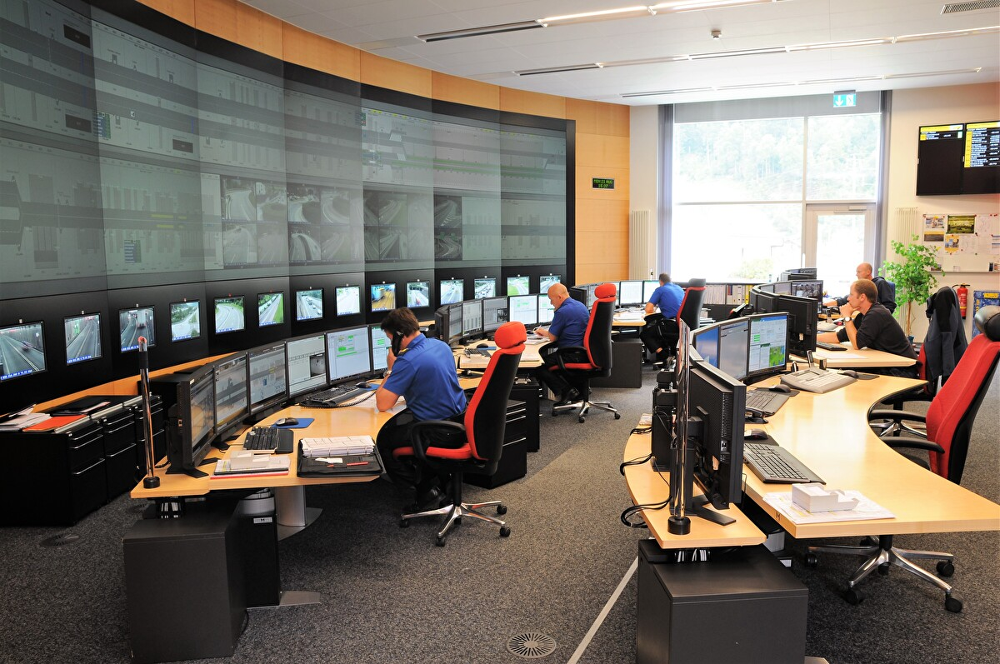

«Er ist eine Maschine»: Warum bei der Kapo Uri alle nur von Zentralist Angelo sprechen
ALTDORF — Es ist Freitagnachmittag, das Telefon in der Einsatzzentrale der Kapo Uri leuchtet ununterbrochen rot. Ein Unfall auf der A2, eine blockierte Fahrspur am Gotthard und gleichzeitig braucht eine Patrouille dringend eine Halterabfrage. Wer jetzt Panik erwartet, kennt Angelo nicht.
Der Zentralist sitzt vor seinen Bildschirmen, das Headset sitzt perfekt, die Hände fliegen über die Tastatur. «Verstanden, zweite Patrouille rückt aus», sagt er mit einer Ruhe, die fast schon unheimlich ist.
Unter den Polizistinnen und Polizisten an der Front ist Angelo längst eine Legende. Ein Kollege, der regelmässig Einsätze fährt, bringt es auf den Punkt. Besonders beeindruckend sei Angelos Reaktionszeit, wenn Spezialisten auf schnelle Daten aus der Zentrale angewiesen sind.
«Manchmal glaube ich, er hat das Schweizer Strafgesetzbuch und sämtliche Verordnungen direkt in seinem Kopf abgespeichert», scherzt eine Polizistin. «Egal wie hektisch es wird, er verliert nie den Überblick und hat immer noch einen lockeren Spruch auf den Lippen.»
Doch wie schafft man es, bei all dem Stress im Kanton so ruhig zu bleiben? Insidern zufolge ist es pure Routine und ein eiserner Fokus. Während andere nach dem dritten Einsatz einen doppelten Espresso brauchen, behält Angelo seinen kühlen Kopf und koordiniert die Rettungskräfte weiter punktgenau an die richtigen Orte. Ein wahrer Held im Hintergrund.
💬 Community (3 Kommentare)